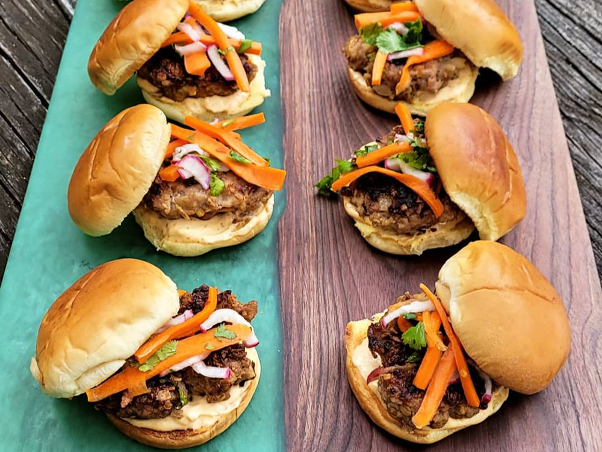

Banh Mi Slider

Description
Vietnamese-inspired prok and beef banh mi sliders.
Ingredients
- 1/2 pound ground beef
- 1/2 pound ground pork
- 1/2 cup rolled oats
Steps
- Gently mix beef, pork, oats, bread
- Heat a frying pan over medium high heat.
- While patties fry, toast slider buns in a toaster yntil lightly browned.